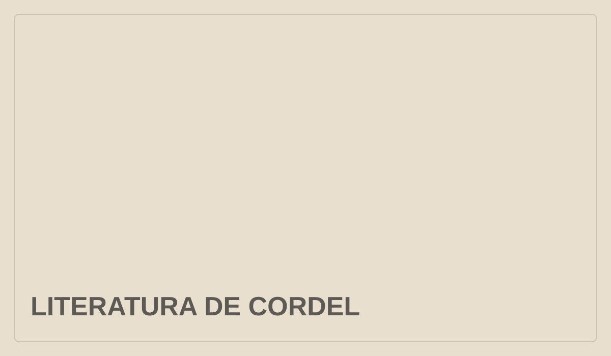

<!doctype html>
<html lang="pt-BR">
<head>
  <meta charset="utf-8">
  <meta name="viewport" content="width=device-width, initial-scale=1">
  <meta name="description" content="Paraíba ponto Cultural — cultura, patrimônio, literatura, artes e audiovisual.">
  <title>Paraíba ponto Cultural</title>
  <link rel="stylesheet" href="styles.css">
</head>
<body>
  <div id="site-header"></div>

  <main>
    <section class="front-page container" aria-label="Abertura editorial">
      <div class="front-grid">

        <aside class="front-left" aria-label="Destaques"><div class="column-title">Destaques</div>
<div id="home-destaques"></div>
</aside>

        <article class="main-story" id="home-manchete" aria-label="Manchete"></article>

        <aside class="front-right" aria-label="Últimas matérias"><div class="latest-title">Últimas</div>
<div id="home-ultimas"></div>
<a class="latest-all" href="#">Todas as matérias →</a>
</aside>
      </div>
    </section>

    <section class="container text-strip" aria-label="Outras matérias">
<div id="home-em-pauta" class="home-em-pauta-grid"></div>
</section>

    <!-- ESPECIAL — DESATIVADO NO LANÇAMENTO
<section class="special-wrap" aria-label="Especial">
      <div class="container special">
        <div class="special-label">Especial</div>
        <div class="special-image">
          
        </div>
        <div class="special-copy">
          <span class="category-link">Literatura & patrimônio</span>
          <h2>O cordel em circulação</h2>
          <p>Uma área flexível para coberturas, séries, ensaios fotográficos ou projetos que mereçam presença temporária na página inicial.</p>
          <a href="#">Acompanhar especial →</a>
        </div>
      </div>
    </section>
FIM ESPECIAL -->

    <!-- COLUNAS — DESATIVADO NO LANÇAMENTO
<section class="container articles-section" aria-labelledby="artigos-title">
      <div class="articles-heading">
        <h2 id="artigos-title">Artigos</h2>
        <a href="#">Ver todos →</a>
      </div>

      <div class="articles-grid">
        <article class="article-card">
          <a href="#">
            <div class="author">Maria de Lourdes Silva</div>
            <h3>Patrimônio cultural também se constrói no cotidiano</h3>
            <p>Memória, pertencimento e práticas locais na construção de uma identidade cultural.</p>
          </a>
        </article>

        <article class="article-card">
          <a href="#">
            <div class="author">João Batista Nunes</div>
            <h3>O lugar da cultura popular na cidade contemporânea</h3>
            <p>Reflexões sobre permanência, transformação e circulação de saberes.</p>
          </a>
        </article>

        <article class="article-card">
          <a href="#">
            <div class="author">Ana Paula Ferreira</div>
            <h3>Literatura paraibana entre memória e renovação</h3>
            <p>Autores, leitores e novas formas de presença pública da produção literária.</p>
          </a>
        </article>
      </div>
    </section>
FIM COLUNAS -->

    <!-- CÓDICE — DESATIVADO NO LANÇAMENTO
<section id="codice" class="codice-wrap">
      <div class="container codice">
        <div class="codice-mark">Códice<br><strong>Parahyba</strong></div>
        <div class="codice-copy">
          <p class="eyebrow">Cadernos do Paraíba ponto Cultural</p>
          <h2>Códice Parahyba</h2>
          <p>Matérias selecionadas em formato editorial para leitura, compartilhamento e preservação.</p>
          <a class="button" href="#">Conheça o projeto →</a>
        </div>
      </div>
    </section>
FIM CÓDICE -->
  </main>

  <div id="site-footer"></div>

  <script src="componentes/layout.js"></script>
  <script src="dados/home.js"></script>
  <script src="script.js"></script>
</body>
</html>
